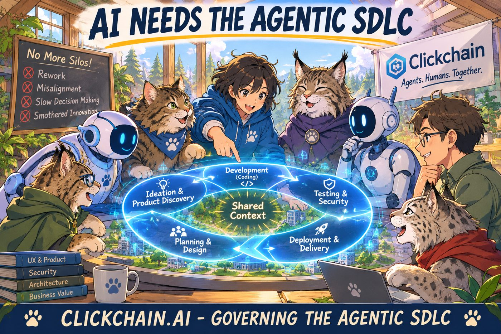

AI Needs the Agentic SDLC
November 16, 2026

If your agents are working in silos, then you are saddled with the same old problems that silos in human organizations always present - rework, misalignment, slow decision making, smothered innovation, and so on. This time, we just call it "AI slop" and "AI babysitting".
Change your mental models and demand an Agentic SDLC where agents collaborate and share context all the way from ideation/product discovery to value in the customer’s hands.
At Clickchain, the agentic ensemble drives the work, agents and humans all sitting together, “shifting left” all QA, Security, Architecture, UX, Business value, into one continuous agent-human mob that shares context through the product journey.
Field notes from my work at ClickChain AI, first posted on LinkedIn. I write the notes by hand; the images are made with AI.